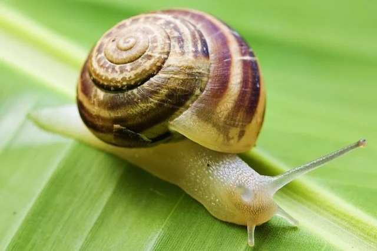

Snail 4#
4 diseases caused by snails (and how to protect yourself) - Tua Saúde Human deaths per year: about 10,000 Greatest danger: transmits disease The so-called African snail can host a worm that, in many cases, develops diseases that can lead to the death of humans. For this reason, it is an animal that, although it does not represent a danger in itself, carries a great risk to human life, when ingested.